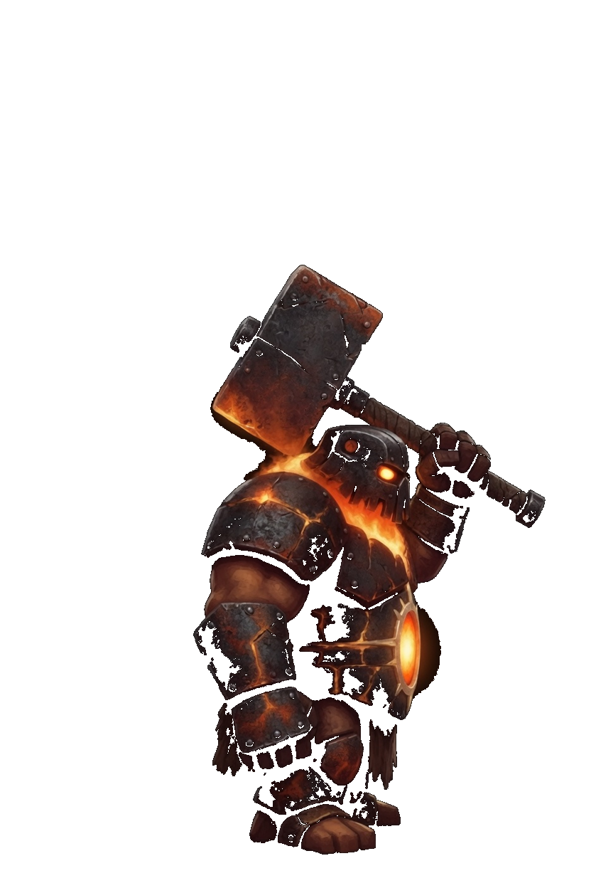
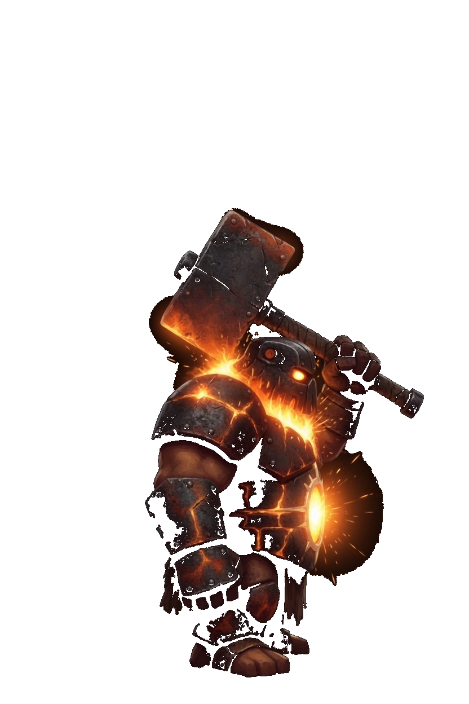
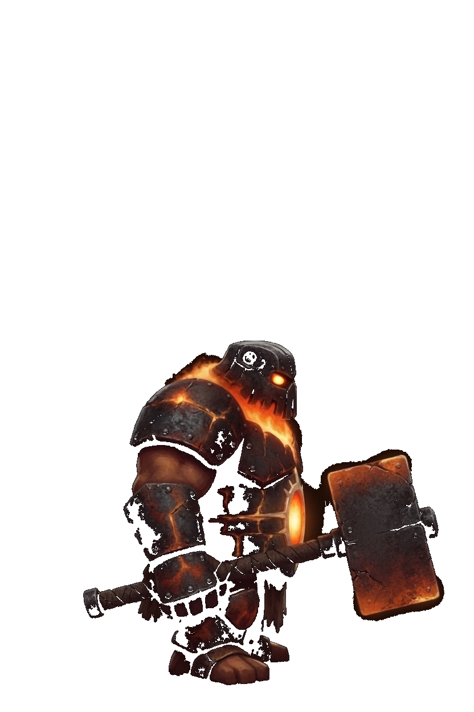
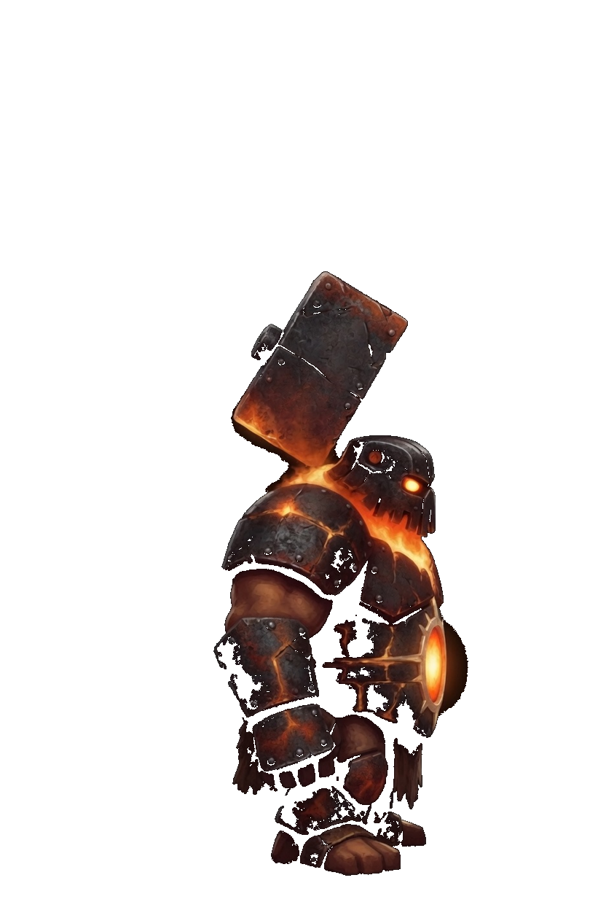
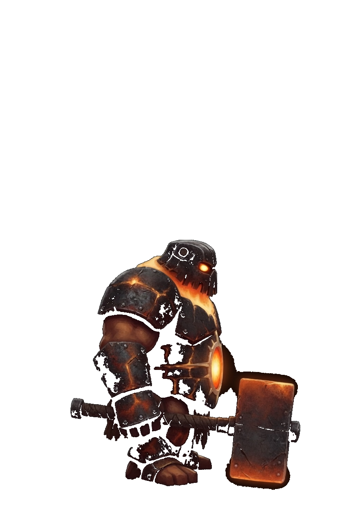
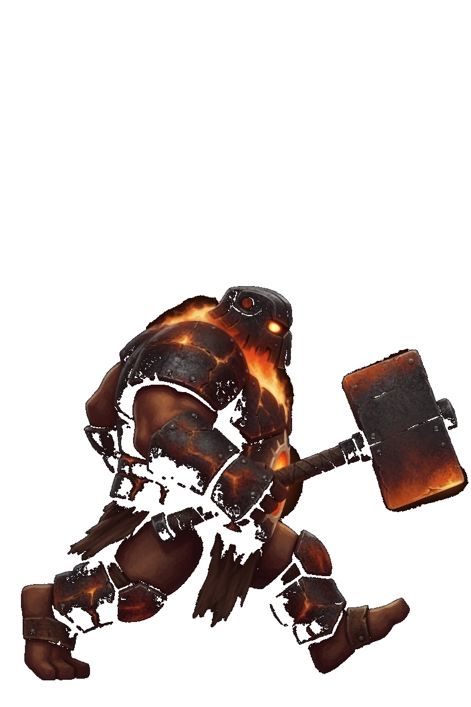
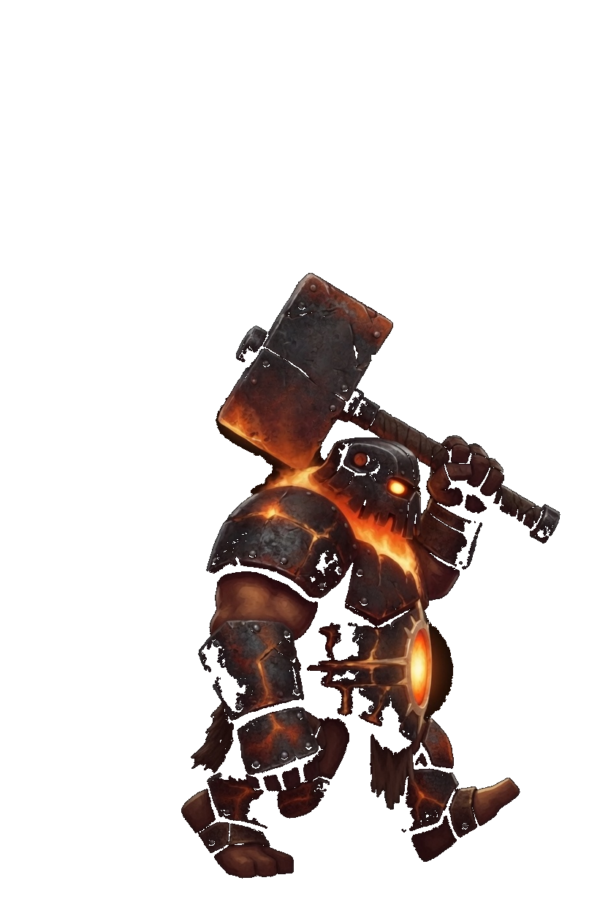
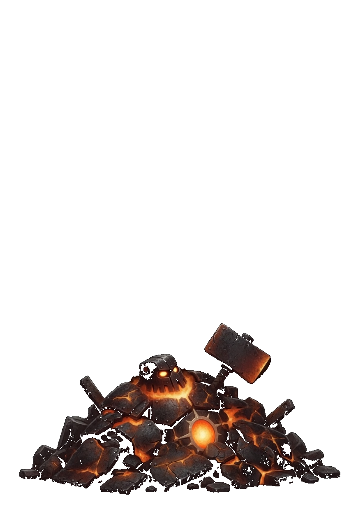
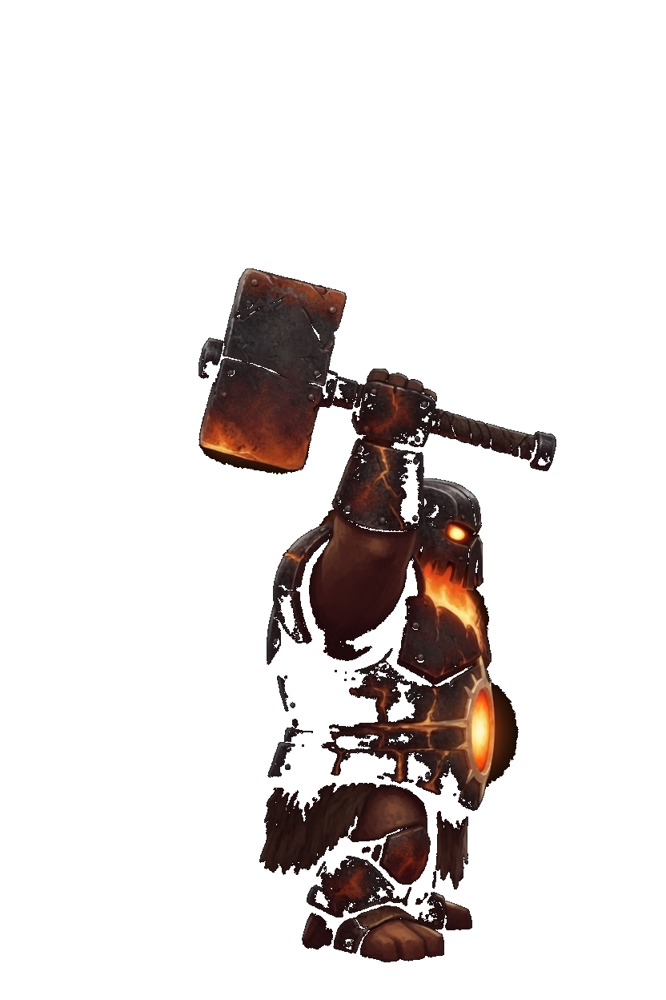

Smith · Nexus Guardian
This card is the only pose list. A later frame has to match one of these keys. Native facing is right. The whole sprite flips. Dark iron plates and an orange furnace chest. The feet are the foot line. Smith is a gun, so the corner step is Slip. There is no move named Dash and no Close key. Forge Bolt, Anvil, Gate Cannon, and Temper Work keep those book names. Gate Cannon stays the shared name. The Lock keeps that name later.
| Book | Value |
|---|---|
| Basic | Forge Bolt · range 7.8 |
| Body | 1175 health · 42 damage · 0.64 attacks/s · speed 1.7 · armor 7 · range 7.8 · mana 100 · regen 8 |
| Crit / cooldown | 0.11 crit · 0.90 cooldown scale |
| Cards | Might · Brutal · Iron |
| Moves | Anvil · Gate Cannon · Temper Work |
| Stride | Slip · a gun · 30s · cost 8 |
What stays off the body
- Forge Bolt is the furnace shot. The cinder in the air is the bolt.
- Anvil is the hammer coming down. The burst on the foe is the blast.
- Gate Cannon keeps that book name. The lance is the beam. The ember sits at the far end.
- Temper Work is the lowered hammer. The mend ring stays on Smith.
Keys

Idle
Hammer on the shoulder, furnace steady, both feet on the foot line.

Forge Bolt
Idle, then the furnace brightens, then idle. 0.50s.

Anvil
Idle, then the hammer swings down, then idle. 0.50s.

Gate Cannon
Idle, then the furnace aims, then idle. 0.50s.

Temper Work
Idle, then the hammer lowers, then idle. 0.52s.

Slip
A lunge toward the right, then idle. 0.35s. Corner step only.

Walk
Idle, then one stride. 0.72s. The lifted foot stays on the leg.

Death
One rubble pile in the lower portion. The hammer and furnace stay in the pile. 1.55s.

Win
The hammer lifts. Both feet stay down. 1.15s.